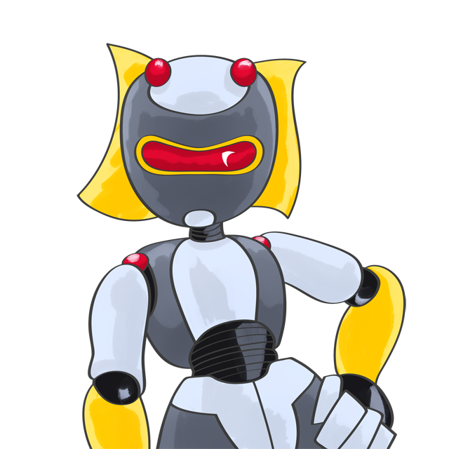

Assignment 11: Final project landing page first pass
Final Project Landing Page
At this point you have clarity on design and scope and you should have all your tech resources and assets available, so you're ready to start testing the waters and build a prototype for your landing page. This is a list of things you should deliver next week:
- Landing page visual design in place
- Landing page final assets in place
- Working first user experience functionality (landing page only)
- Active links to placeholder locations and/or other sections
- Usability testing. Test your landing page design finding and using real-life approximations to the personas you developed last week. Invite a classmate, friend or family member to use your website.
- Did they understand it?
- Could they perform the tasks you had prepared for them?
- Could they find what they were looking for?
- Was it an engaging experience for them?
Write down a brief usability report explaining how your tests informed your design.
Due Date
Monday, April 20, 9:00am.
Readings
- No more readings :D
